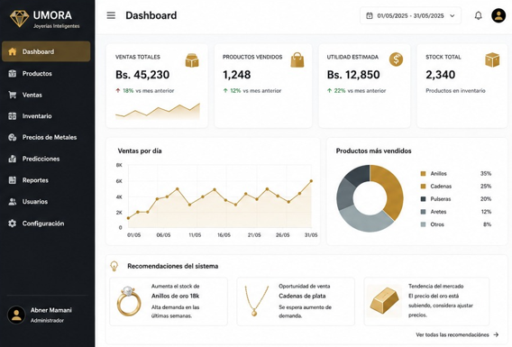
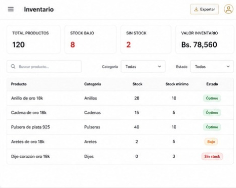
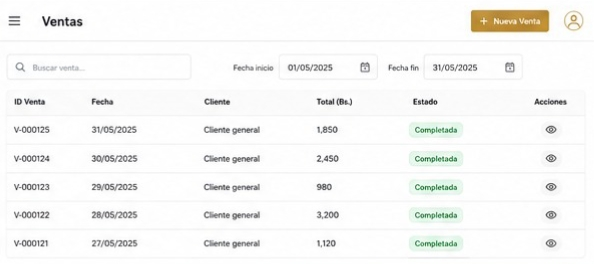
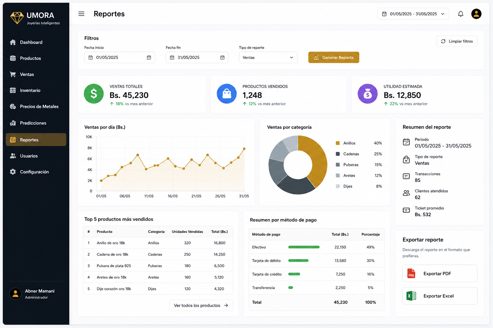

Gestión de Inventario, Registro de Ventas, Predicción de Demanda, Consulta de Metales y Apoyo Inteligente para la Toma de Decisiones.
Conocer MásMuchas joyerías aún administran sus inventarios y ventas de forma manual, generando errores en el control de stock, pérdidas económicas y dificultades para planificar compras y ventas futuras.
UMORA integra herramientas inteligentes para gestionar inventarios, registrar ventas, analizar tendencias del mercado, consultar precios del oro y la plata y generar recomendaciones comerciales.




Abner Gadiel Mamani Asistiri
Carrera de Ingeniería de Sistemas
Universidad Privada Franz Tamayo - UNIFRANZ